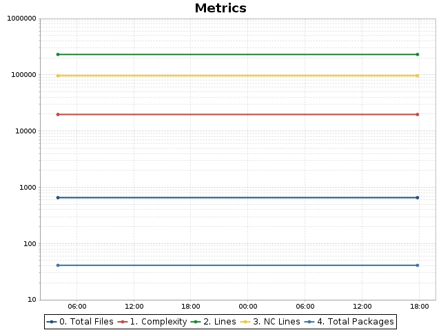
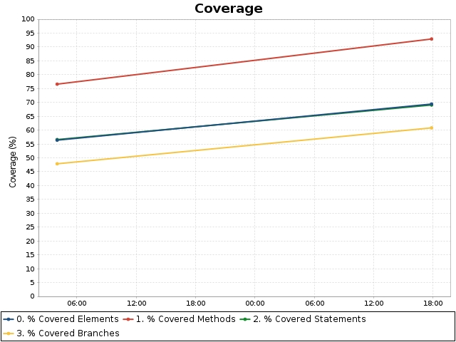

Historical coverage report
Coverage overview
| |
Conditionals |
Statements |
Methods |
TOTAL |
|
Project
|
60.8% |
69.1% |
92.9% |
|
Added classes
Table shows classes which have been added over the last 1 day.
Actual interval (based on timestamps of history points) is 1 day.
Showing maximum 5 classes.
Metric used: % TOTAL Coverage, max value is 100.
Changed classes
Table shows classes for which metric has changed (increased or decreased) above the threshold
(+/-1) over the last 1 day.
Actual interval (based on timestamps of history points) is 1 day.
Showing maximum 5 classes.
Metric used: % TOTAL Coverage, max value is 100.
Gainers
Losers
No classes have lost metric's value more than the threshold (-1).
Charts

